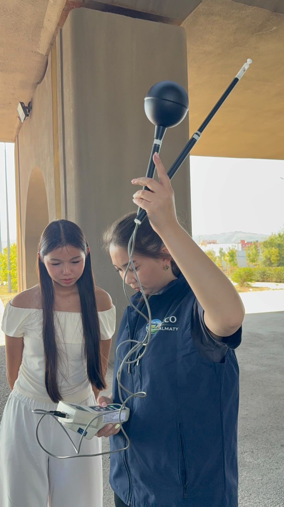
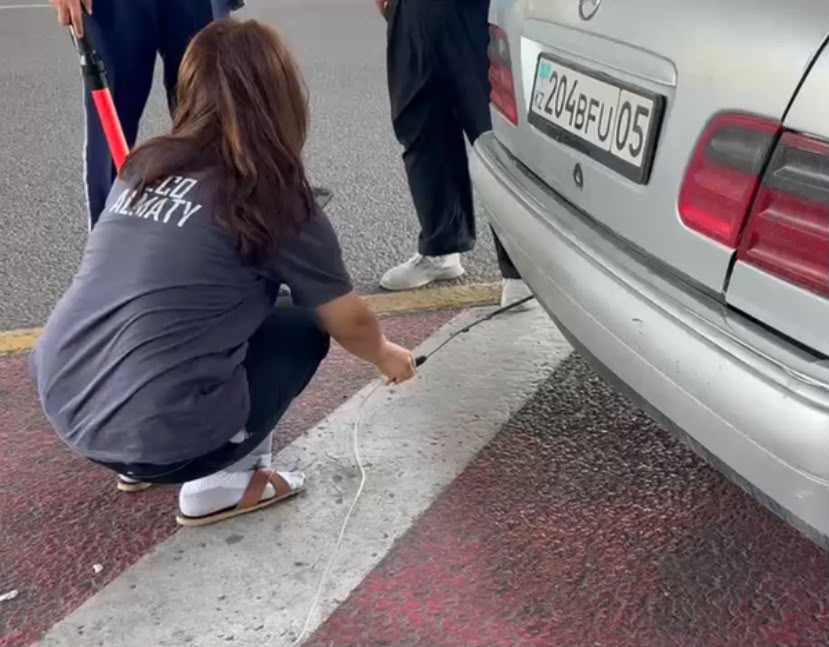
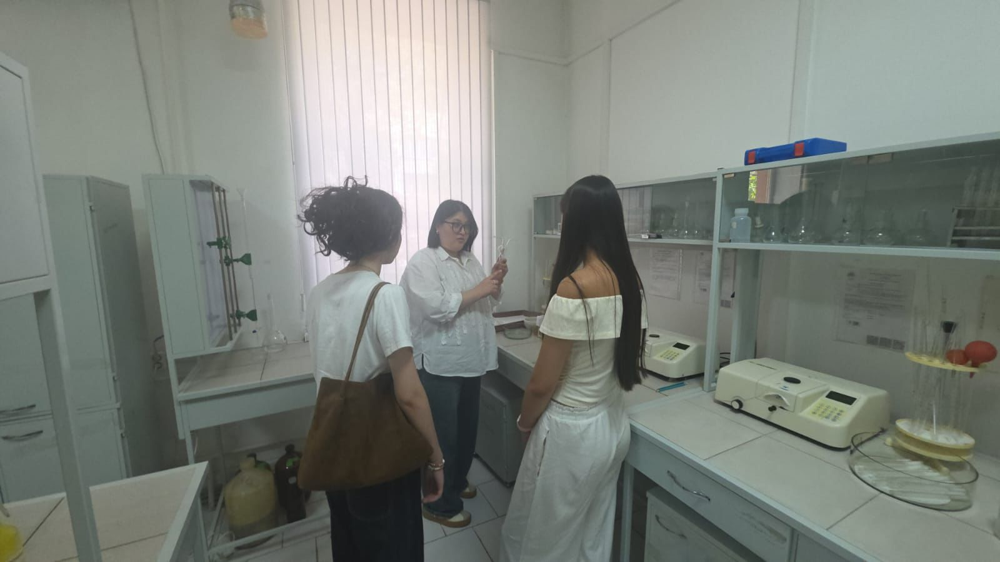
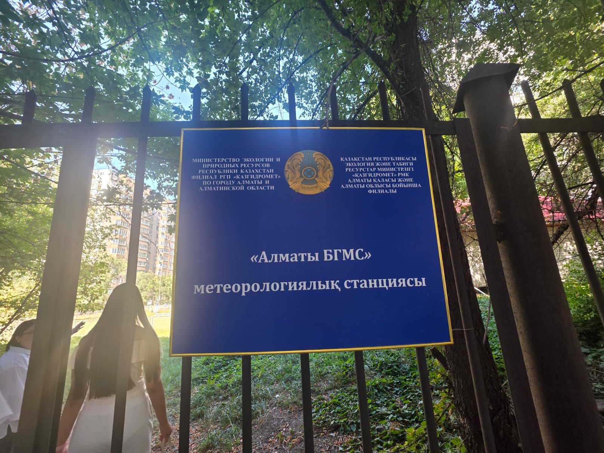

Қаладағы зиянды шығарындылардың автокөлікке тиесілі үлесі
2026 жылы тексерілген 5 496 автокөліктің нормативтен асқаны
Әлемдегі шу туралы шағымдардың автотранспортқа қатысты үлесі
ДДСҰ нормативі бойынша түнгі шу: 35 дБ — тітіркену, 42 дБ — ұйқысыздық, 50 дБ және одан жоғары — жүрек-қан тамыры ауруларының қаупі.
Өлшеу: MS6708 шу өлшегіш, таңертеңгі және кешкі қарбалас уақытта, 20 минуттық интервалда. Диаграмма, дБ.
Сонымен қатар бензапирен концентрациясы зерттелген барлық негізгі көшелерде ШРК нормасынан едәуір жоғары тіркелген.
Көлік жолына қараған бетте акустикалық панель шуды шағылыстырып, әлсіретеді. Вертикальды өсімдіктер мен мүк шаң және күйе бөлшектерін ұстайды. Жүйе сыртқы электр желісіне тәуелсіз жұмыс істейді.
Диаметрі 2,5 мкм-ге дейінгі қалқыма бөлшектер
Диаметрі 10 мкм-ге дейінгі қалқыма бөлшектер
Pseudoscleropodium purum мүгінде Еуропаның 9 аумағында: ~12 000 бөлшек және 23 химиялық элемент анықталған
C₁ — фито-экранға дейінгі, C₂ — экраннан кейінгі ластаушы заттың концентрациясы. Көрсеткіштер: PM2,5, PM10 және шу.
Мәндерді өзіңіз енгізесіз. Бұл жобаның нәтижесі емес, формуланы көрсететін құрал.
Авторлар Eco Almaty ЖШС-де МЕТЕОСКОП-М құрылғысымен және газ талдағыш зондымен танысты, Қазгидромет филиалының лабораториясында тәжірибелер жасады, «БГМС» метеостанциясындағы бақылауды қарады.

Сурет 1 МЕТЕОСКОП-М құрылғысымен жұмыс, Eco Almaty
Сурет 2 Газ талдағыштың сынама алу зондымен жұмыс
Сурет 3 «Қазгидромет» филиалының лабораториясы
Сурет 4 «БГМС» метеорологиялық станциясыжаңа жасыл желек, 2030 жылға дейін
бір тұрғынға жасыл желек, 2030 жылға қарай
жасыл желек, 2026 жылы
Дәстүрлі бөгеттерден өзгеше, акустикалық басу мен фито-фильтрация күн энергиясымен жұмыс істейтін біртұтас инженерлік-экологиялық модельге біріктірілді.
Модульдік шешім тығыз салынған көшелерде шудан қорғауға және ауаны тазартуға арналған; Алматы Экология басқармасының жобаларына ұсынылуы мүмкін.